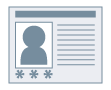

Вы можете задать имя пользователя для данных печати и PIN-код (пароль) для защищенной печати.
Данная функция полезна, если Вы хотите устанавливать/управлять именами пользователей клиентов в среде общего принтера.
Данная функция полезна, если Вы хотите устанавливать/управлять именами пользователей клиентов в среде общего принтера.

1.
Откройте вкладку [Настройки устройства].
Нажмите [ ] (Пуск) → [Устройства и принтеры].
] (Пуск) → [Устройства и принтеры].
] (Пуск) → [Устройства и принтеры].Выше указаны действия в ОС Windows 7 и Server 2008 R2.
В ОС Windows 10: нажмите [Параметры] → [Устройства] → [Принтеры и сканеры] → [Сопутсвующие параметры] → [Устройства и принтеры].
В ОС Windows 8, 8.1, Server 2012 и Server 2012 R2: на рабочем столе выдвиньте боковую панель с правой стороны экрана и выберите пункты [ Параметры] → [Панель управления] → [Устройства и принтеры].
Параметры] → [Панель управления] → [Устройства и принтеры].
Параметры] → [Панель управления] → [Устройства и принтеры].В ОС Windows Vista и Server 2008: Нажмите [] (Пуск) → [Панель управления] → [Принтеры].
] (Пуск) → [Панель управления] → [Принтеры].В ОС Windows Server 2003 и Server 2003 R2: нажмите [Пуск] → [Принтеры и факсы] (или [Пуск] → [Панель управления] → [Принтеры и другое оборудование] → [Принтеры и факсы]).
Щелкните правой кнопкой мыши значок принтера, который Вы желаете определить → нажмите [Свойства принтера] (или [Свойства]).
Выберите вкладку [Настройки устройства].
2.
Выберите [Задать информацию пользователя] → нажмите [Настройки].
3.
Введите [Имя пользователя] и [PIN-код для защищенной печати]/[Пароль для защищенной печати].
Чтобы изменить настройку имени пользователя по умолчанию: Нажмите [Настройки значений по умолчанию] → установите [Имя, установленное в качестве имени пользователя] → нажмите [ОК].
Для предотвращения изменений имен пользователей: Нажмите [Настройки значений по умолчанию] → выберите [Не разрешать изменять имя пользователя] → нажмите [ОК].
4.
Нажмите [ОК] → нажмите [Применить] во вкладке [Настройки устройства].
Необходимые условия
Компьютер с разрешением на полный доступ к принтеру